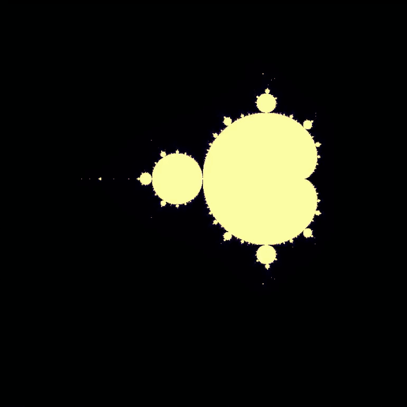

Deep Zoom Demo

Click-to-zoom session — each click zooms 100× into that coordinate
How I Got Here
→My brother, a philosophy major at CU Boulder, uses the Mandelbrot set to construct philosophical arguments — the idea that infinite complexity emerges from simple rules fascinated me.
→Reading David Foster Wallace's "Infinite Jest" — whose structure mirrors fractal self-similarity — reinforced this interest and pushed me to actually build it.
→The project became a deep dive into complex number iteration and visualization — one of the most beautiful intersections of pure math and computer graphics.
What Is the Mandelbrot Set?
First described by Benoit Mandelbrot in the 1970s, the Mandelbrot set is defined by a surprisingly simple rule applied to complex numbers — yet it produces boundless geometric complexity at every scale of magnification.
The Core Iteration
Z_{n+1} = Z_n² + CStart with Z₀ = 0
A complex number C is in the Mandelbrot set if |Z_n| never exceeds 2
(i.e., the sequence remains bounded)
If |Z_n| > 2 for some n → C escapes → not in the set → colored by escape speed
Named Regions
The Mandelbrot set contains famous named sub-regions, each with its own visual character and mathematical properties. The explorer was built specifically to zoom into these areas.
Seahorse Valley
A region near the boundary where shapes resemble cascading seahorse spirals.
Triple Spiral Valley
Dense triple-arm spirals revealing self-similar structure at extreme zoom.
Valley of the Needles
Thin tendrils extending outward, resembling needle-like filaments in fractal foam.
Mini Mandelbrot
A complete miniature copy of the entire Mandelbrot set, found embedded in the boundary regions.
How the Explorer Works
The explorer is an interactive Matplotlib loop. Each click re-renders the fractal centered on exactly where you clicked, at 1% of the previous window size — zooming in 100× per click. The window shrinks symmetrically around the click point.
Core zoom mechanism (from source)
zoom = 0.01 # 1% of current window = 100× magnification per clickxmin = click_x − (xmax−xmin) × zoom / 2
xmax = click_x + (xmax−xmin) × zoom / 2
ymin = click_y − (ymax−ymin) × zoom / 2
ymax = click_y + (ymax−ymin) × zoom / 2
→Resolution: 800×800 pixel grid. Every pixel maps to a unique complex number c = (real, imag) computed from its screen position and the current window bounds.
→Iteration limit: 100 iterations per pixel. Escape value is n when |Z| > 2. Pixels that never escape get value 100 (black — inside the set).
→Colormap:
inferno — maps escape iteration count to a perceptually uniform yellow→red→black gradient. Fast escapes are yellow-white; slow escapes are deep red-purple; the set is black.→Interactive: Powered by Matplotlib's
plt.ginput(1) — waits for a click, reads its coordinate in data-space, and immediately re-renders at the new zoom level.Limitations & Honest Assessment
→Incredibly slow: Pure Python iteration over millions of pixels is computationally expensive. Each deep-zoom frame can take minutes to render.
→Diminishing returns: At extreme zoom depths, floating-point precision limits prevent meaningful new detail — the image degrades to numerical noise.
→Higher memory usage: Storing coordinate arrays for full-resolution renders at deep zoom levels requires significant memory.
Future Plans
What's Next
Parallel processing — NumPy vectorization and multiprocessing to speed up rendering by 10–100×.
Fractal Art Gallery — A curated set of the most visually striking coordinates, rendered at poster resolution.
3D Mandelbrot (Mandelbulb) — Extending the iteration into 3D space using hypercomplex numbers for volumetric fractal geometry.
Interactive web version — GPU-accelerated rendering in the browser for real-time fractal exploration.
Other fractal sets — Julia sets, Burning Ship fractal, and Newton fractals using similar iteration techniques.
Fractal Art Gallery — A curated set of the most visually striking coordinates, rendered at poster resolution.
3D Mandelbrot (Mandelbulb) — Extending the iteration into 3D space using hypercomplex numbers for volumetric fractal geometry.
Interactive web version — GPU-accelerated rendering in the browser for real-time fractal exploration.
Other fractal sets — Julia sets, Burning Ship fractal, and Newton fractals using similar iteration techniques.
Tech Stack
Python
Matplotlib
Complex Math
Animation
NumPy
Fractal Geometry
Visualization